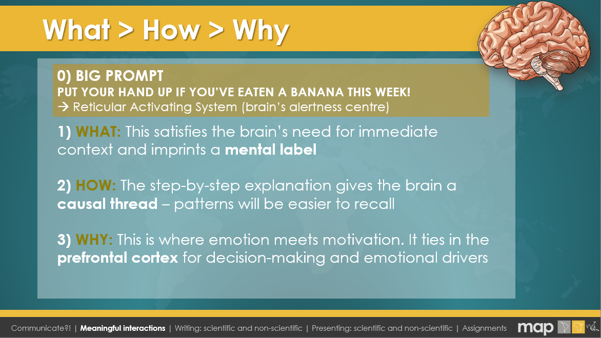
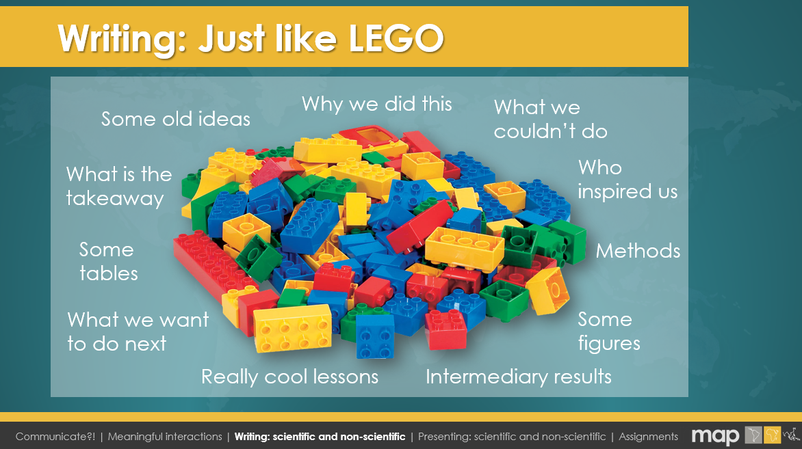
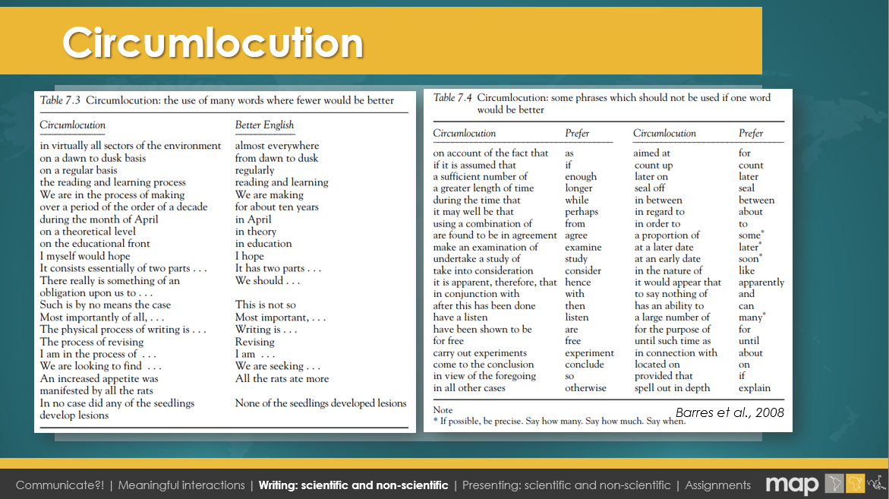
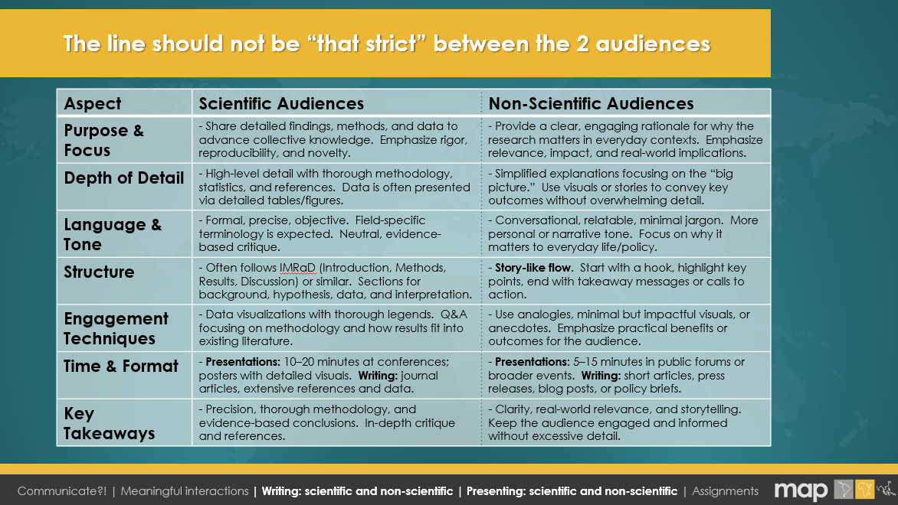

Communication is not an afterthought—it is integral to any research or innovation process. When research findings can influence policies, local communities, or broader scientific progress, sharing your insights clearly and persuasively becomes both an ethical responsibility and a catalyst for real-world impact.
Think of a time you or someone you know struggled to convey research findings to a non-expert (family member, community leader, policymaker).
Watch the recording from this session from 10 March 2025 and read the recommended reading from Google Drive.
Here is a simple workflow you can adapt to any communication scenario:
Humans respond strongly to stories, visuals, and emotion. Use these elements to ensure your message resonates and sticks:
Tip: Start with a quick interactive moment—like “Raise your hand if you ate a banana this week!”—to prime the Reticular Activating System in the brain for alertness.
What > How > Why flow recommendation:

A Theory of Change (ToC) is a structured framework that explicitly lays out how and why you expect a certain intervention, project, or approach to lead to a desired outcome. One way to use ToC is to:
Dissemination is a one-way approach (e.g., a formal report), while Diffusion is more organic, spreading via interpersonal networks with less control. If your aim is widespread adoption or conversation, planning for a more “viral” diffusion approach may be key.
Choose a specific research finding (e.g., “Planting cover crops improves soil health”). Sketch a mini ToC:
The LEGO Analogy: writing is like building a model—gather your “pieces” (methods, data, visuals), then arrange them until they form a coherent whole. Come up with your own workflow, might look very different compared to others and that's okay!

Keep the "brain trickery" in mind for your reader - let's make it a nice experience for them to read your work. Rough draft is great - then let's go into more details and get rid of circumlocution.
SENTENCES
PARAGRAPHS
CIRCUMLOCUTION: the use of many words where fewer would be better. Save these tables from the Scientists Must Write book as a reminder and be ruthless with getting rid of unneccessary words.

500-word summary for a non-specialist audience
250-word abstract (scientific style)
Below are excerpts of long, complex sentences related to malaria research. Try rewriting them in simpler terms—first as a clear scientific statement, and then for a non-scientific or blog audience. When you’re done, compare your versions with the examples under each dropdown.
Original / Circumlocution:
“In the context of evaluating large-scale anti-malaria strategies implemented over the last decade, an intricate geospatial framework,
constructed utilizing a multitude of heterogeneous data sources, was deployed to quantify shifting patterns of
Plasmodium falciparum endemicity within the sub-Saharan region, thereby enabling a multifactorial analysis of
intervention efficacy.”
(B) Improved Scientific:
“We developed a geospatial model using multiple data sources—routine surveillance records, household surveys, and
climatic variables—to assess changes in Plasmodium falciparum prevalence across sub-Saharan Africa.
This approach allowed us to quantify how interventions have influenced malaria transmission over the past decade.”
(C) Blog-Friendly:
“Researchers pulled together maps, surveys, and climate data to see how malaria infection rates changed across
sub-Saharan Africa. Thanks to this modeling, they could figure out if bed nets, medicines, and other prevention tools
really made a difference.”
Original / Circumlocution:
“It was observed, through the systematic collation and subsequent analysis of surveillance data, that substantial declines in
parasite prevalence were correlated in a statistically significant manner with heightened coverage of interventions such as
insecticide-treated nets, thereby suggesting a pivotal role of these measures in the large-scale reduction of disease incidence.”
(B) Improved Scientific:
“Our analysis shows a significant reduction in parasite prevalence that aligns with increased coverage of
insecticide-treated nets. These findings underscore the critical role of nets in reducing malaria burden.”
(C) Blog-Friendly:
“When people started using more bed nets, malaria infection rates dropped. In other words, simple nets were a big
reason why malaria cases went down.”
Original / Circumlocution:
“In light of the substantial effect sizes attributed to vector-control measures observed during our longitudinal assessment, one may
postulate that ongoing reinforcement of funding allocations toward these preventative modalities stands to yield further
epidemiological benefits.”
(B) Improved Scientific:
“Given the strong impact of vector-control measures in our study, continued investment in these preventive methods
could further decrease malaria incidence.”
(C) Blog-Friendly:
“Because bed nets and other mosquito-fighting tools worked so well, it’s clear that keeping them funded can push
malaria rates down even more.”
Do bed nets and anti-malarial medicines prevent a lot of malaria cases?
A team of scientists used data from thousands of surveys and national control programs across Africa. They found that these
measures prevented about 663 million malaria cases between 2000 and 2015—proving that simple tools like nets are powerful
in saving lives.
Communication is an ongoing journey of experimentation and refinement. By applying a thoughtful framework—starting with a clear purpose, structuring your message for the intended audience, and actively seeking feedback—you can continuously improve how you connect with others. And "non-sciency" storytelling and great visuals for a scientific audience works well too. There should be no hard lines between how one communicates to "scientists" vs "non-scientists"!
